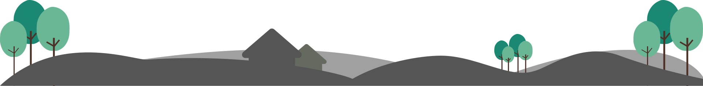

Selamat datang di HidroponikKu tempat di mana perjalanan hidroponik Anda dimulai. Jelajahi dunia tanaman yang tumbuh subur tanpa tanah dan temukan keindahan pertanian inovatif. Dari panduan praktis hingga inspirasi desain sistem, kami hadir untuk memandu Anda melalui langkah-langkah sukses bercocok tanam hidroponik. Mari bersama-sama menciptakan kebun impian Anda yang modern dan berkelanjutan. Selamat mengeksplorasi, bertumbuh, dan terinspirasi bersama HidroponikKu!
